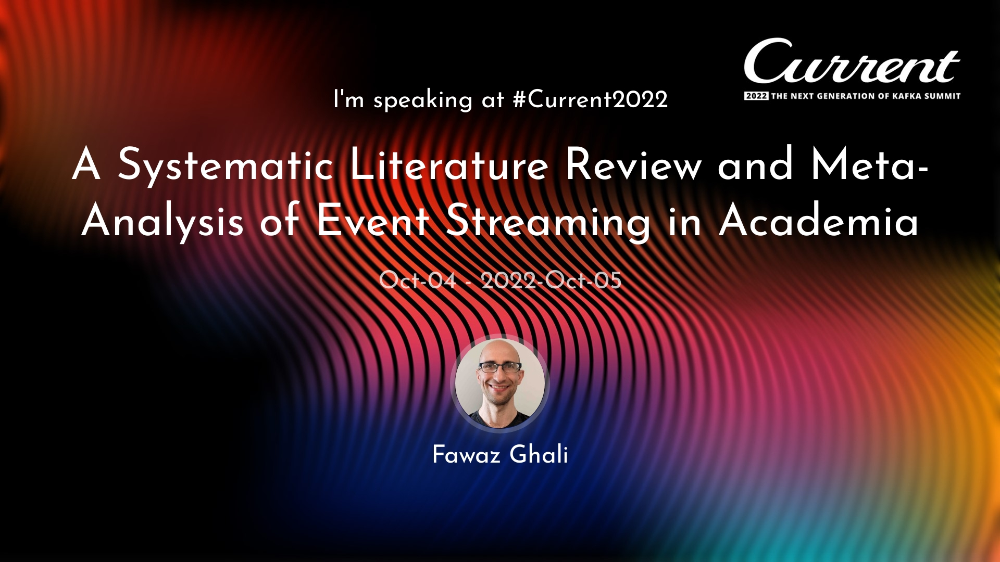
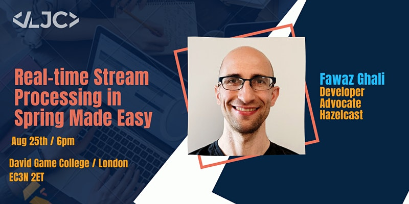
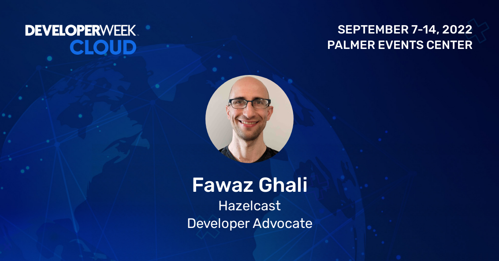

With 20+ years of experience in AI and Machine Learning, both industry and academia, my roles varied from a Software Developer, Lead Applications Developer, IT Consultant, Research Staff and Senior Lecturer. One element that stayed constant in my previous jobs is Public Speaking and “getting tech stuff explained with ease”.



I love creating content, delivering it through presentations, demos, talks and raising awareness. I’m passionate about helping developers' communities in getting the most out of their software tools and applications. I share my content on my social media links below. If you want to reach out, you can email me directly at fawaz.ghali@hazelcast.com